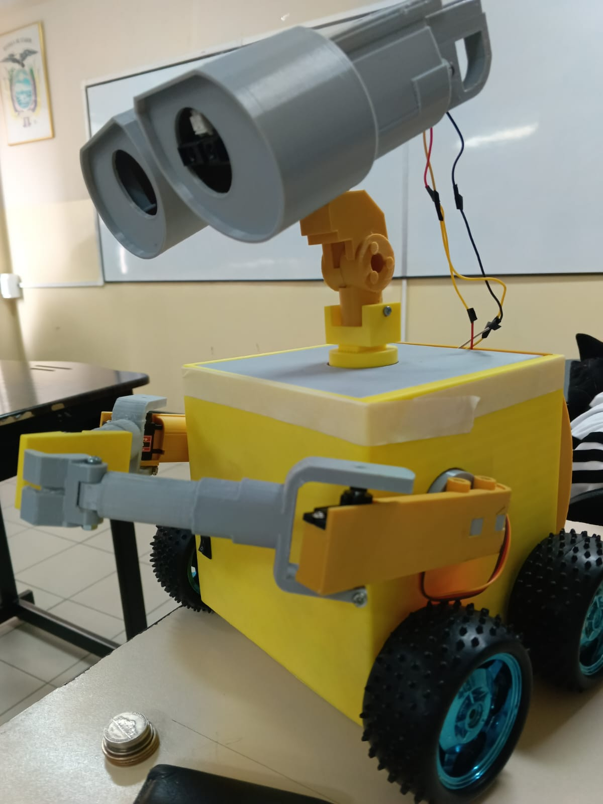
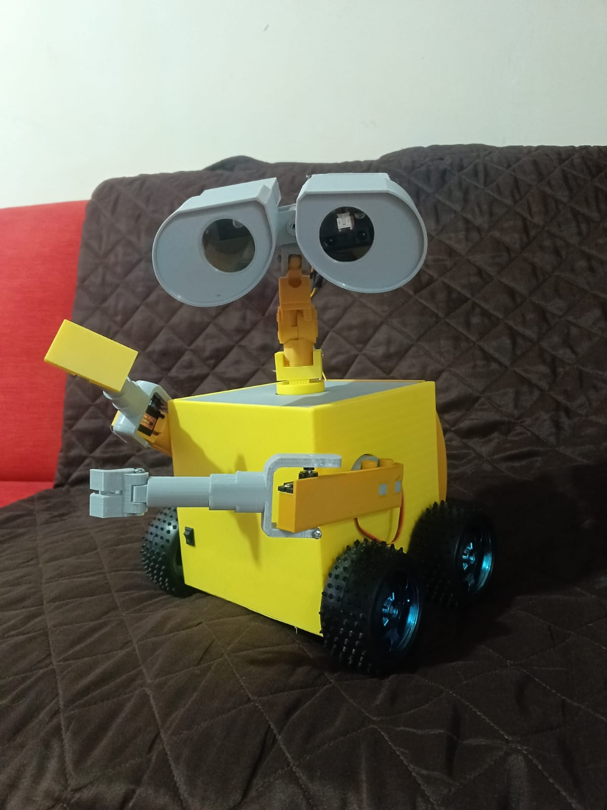
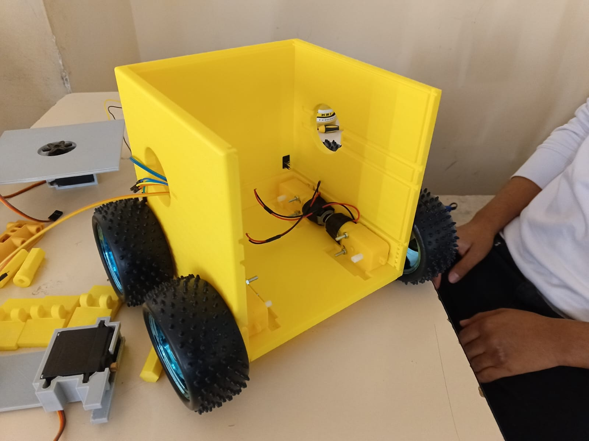
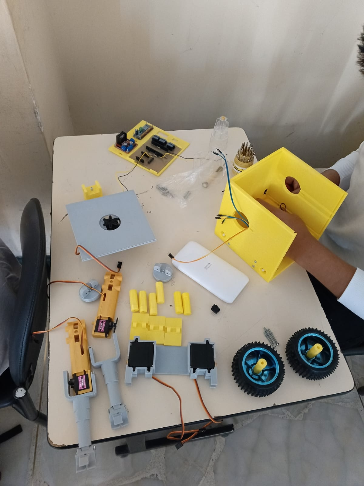

Robótica Móvil & Visión Artificial
Robot WALLE: Recolector y Clasificador Autónoma de Residuos
Desarrollo completo desde cero (diseño CAD, electrónica y programación) de un robot móvil multi-tarea inspirado en WALLE, equipado con clasificación de materiales por visión artificial e inteligencia distribuida.

Prototipo final ensamblado (Vista frontal)

Estructura mecánica y sistema de tracción

Distribución de componentes y diseño estético

Vista del chasis y despiece de componentes internos

Distribución electrónica y ensamble mecánico
Prueba de recolección y transporte de fundas plásticas
Manipulación de objetos con brazos articulados
Funcionamiento del sensor infrarrojo en evasión de obstáculos
Demostración general del proyecto y características
Arquitectura y Especificaciones Técnicas
- Diseño Mecánico y CAD: Modelado 3D personalizado enfocado en la silueta icónica de WALLE. Incluye chasis, carcasa y dos brazos móviles articulados impresos en 3D que permiten al robot sujetar y levantar objetos de forma eficiente.
- Tracción y Electrónica: Base móvil diferencial impulsada por 4 motores de corriente continua. Integración de un microcontrolador ESP32 encargado del control de movimiento y adquisición de datos.
- Sistema Sensorial (Ojos de WALLE): En uno de sus ojos integra la cámara ESP32 para transmisión de video; en el otro, un sensor infrarrojo dedicado a la detección y evasión autónoma de obstáculos.
- Visión Artificial y Clasificación: Procesamiento de imágenes mediante Python y OpenCV implementando clasificadores **Haar Cascade**, permitiendo identificar y clasificar diferentes tipos de materiales y residuos (vidrio, mascarillas o material quirúrgico, plásticos/fundas y madera).
- Comunicación Inalámbrica: Conectividad en tiempo real mediante el protocolo **MQTT** para entrelazar el microcontrolador a bordo con el procesamiento centralizado en la computadora.